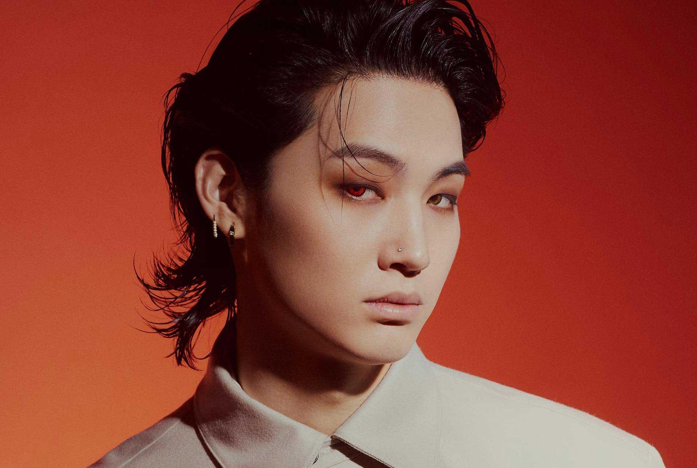
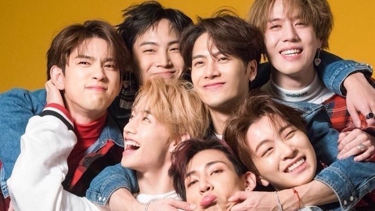

About Jaebeom
Im Jaebeom, born in 1994, is the second oldest member and the leader of GOT7. He was previously a part of the duo known as JJ Project alongside his now GOT7 bandmate Park Jinyoung. The duo also tied at the finals of the JYP Entertainment open auditions. Jaebeom, who also goes by Def., prefers to live a quiet, quaint life when he isn't in the limelight as a member of the JYP boy group.
Jaebeom in a recent shoot for Allure Magazine
Likes
- cats
- analog photography
- being ahgases' bestfriend
Dislikes
- marriage proposals from fans
- 5 bambams are too much for him
Jaebeom's Friends
\- Park Jinyoung: From the JJP duo, comes Park Jinyoung. Jaebeom's soulmate and the only one who can tame him.
- Mark Tuan: The only brave one who will pull Jaebeom's cheeks at any given opportunity.
- Jackson Wang: JB fanboy like the rest of us. 12/10 can make him laugh.
- Bambam: JB's child, but JB cannot handle 5 of him. Has too much power.
- Choi Youngjae: Only maknae to fully get away with bullying Jaebeom.
- Kim Yugyeom: JB's child Pt.2, less chaotic than Bambam and gets kisses from Jaebeom on the daily according to sources.